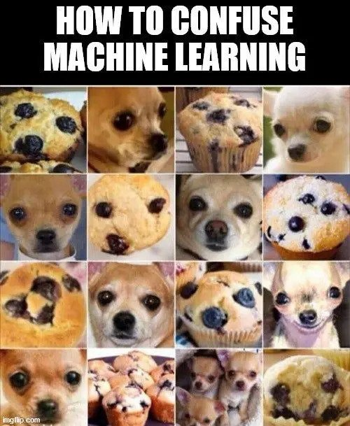

Marrae Chavis-Thomas / July 21st, 2023
My Group's game was called "Cipher Search", it was a game about cryptology where you use keys given to solve puzzles and find items to gain points in a 15 minute time limit. Some challengs were finding out how to play the game and making rules, another challenge was decideing a time limit. My group was able to sit and talk it out for a couple of minutes while trading ideas and that's how we came up with our final game idea. If we had more time I would have added harder challengs and more puzzles.


Marrae Chavis-Thomas / July 21st, 2023
The Video below is a video about how a beginner lerned to code 4 months and I liked it because it was interesting to see how someone could learn to code in such little time.
This meme is about how machine's can self learn, but could often mistake things.
Marrae Chavis-Thomas / July 18th, 2023
My postis about Agnes Meyer Driscoll and her role as a cryptanalyst, what kind or work she did, Her accomplistmemts, where she worked, and When did her work take place.
Agnes was a navy cryptanalyst who helped solve hidden messages in Japanese naval systems during various wars. She entered into the U.S navy in 1918 and was assigned the rank of Chief Yeoman of the Code and Signal section of the Director of Naval Communications. Within her first days of working in the section she co-developed the "CM" but in 1923 she left the Navy and Joined the fledgling Heben Electric Code company as a technical advisor. However she later returned to the navy because the company failed later down the road.
In her three-year career she broke Japanese navy codes such as: The Red Book Code (1920), The Blue Book code and she even helped us break the codes for the Japanese fleets operational code which the Navy exploited after the Pearl Harbor attack. During that time she sponsored the introduction to support cryptanalysis against Japanese naval code systems. Early in WW2 she helped the navy fight against the German naval Enigma machine. Agnes was a part of the navy contingent that joined cryptologic agencies with the Armed Forces Security Agency and National Security Agency.